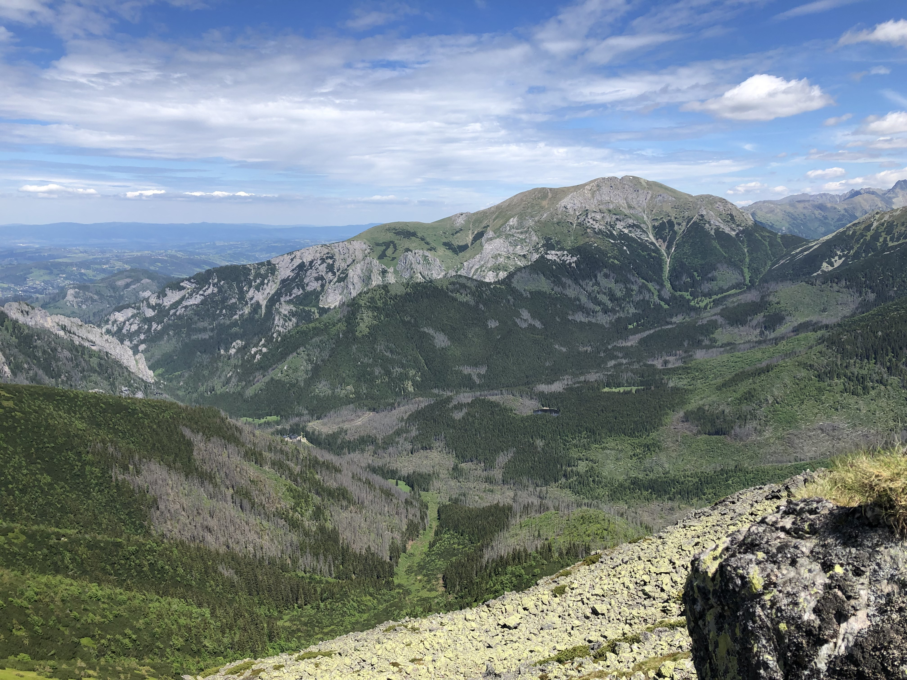

Szlak górski #1
Nosal jest jednym z bardziej dostępnych tatrzańskich szczytów. Wystarczy dosłownie 40 minut i już jesteście na miejscu. A jakie przy tym panoramy! Szczyt jak na tatrzańskie standardy wysokością nie imponuje. Bo gdzie stawać w szranki z innymi, mając marne 1206 metrów wysokości.